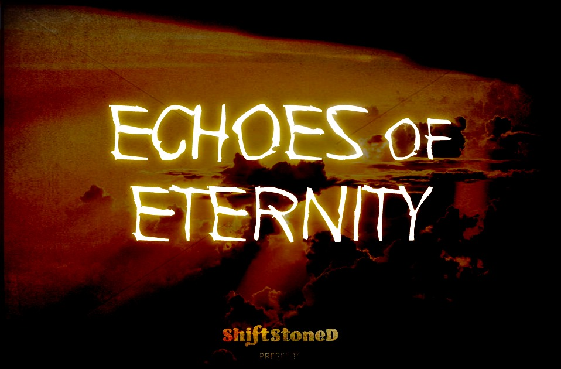

Echoes of Eternity: ECQ Rundown
Taking a look at the Top Eight decks from Echoes of Eternity, the second official 2020 Championship Qualifier for Eternal Card Game to feature the Throne format
Power portraits and standout features for each the finalists

February 24, 2019 - The second Eternal Chapionship Qualifier event of the 2020 season to feature the Throne format has concluded,
Balance changes aimed at the dominant fire/time decks, diverse metagame overall, return of winchest, in the end it was Dark Horse reamnimator that took home the trophy, casters speculated if the top two finalists worked together, which was confirmed on sunyveil's post-game interview.
1st P L A C E:

►
Twanbon's decklist (Combrei Aggro)
17T, 16J, 4xE-Grodov, 2xE-Kodosh, Tocas, Waystone Harvester, wants TT and JJ early, forgoes seats for emblems, risky in many ways
Standout feature: Something something new paragraph.
view deck ►
2nd P L A C E:

►
KeithPelig's decklist (Xenan Strangers)
27T, 21S, 4 Crests, 4 Diplo Seals (Initiate, Suffocate, Tocas), 4 E-Grodov, no Banners
Conservative, 87% or better, lots of ramp (Initiate, Devotee, Trail Maker, A-Merch,Tocas)
Standout feature: Something something new paragraph.
view deck ►
3rd P L A C E:

►
Aranq13's decklist (Feln Reanimator)
17P, 18S, Contractx4, PPPSSS for Felrauk, no Time,
Standout feature: Something something new paragraph.
view deck ►

►
Sunyveil's decklist (Combrei Midrange)
29P, 16S, ChaCu's ability, CobaltWaystone, Eilyn'sFavor.
Standout feature: Something something new paragraph.
view deck ►
5th P L A C E:

►
Almost's Decklist (Destruction Destiny Combo)
20F, 23P. 3xSeekPower, 4xCobaltWaystone, 3xGraniteWaystone,
Standout feature: Something something new paragraph.
view deck ►

►
Liontozion's Decklist (Even Elysian)
22F,18T,22J: 10Crest, 4xSeekPower, 3xFindTheWay, 4xA-Mart, Kairos in the market, Xulta Arcanum not to be overlooked as a power/influence source.
Standout feature: Something something new paragraph.
view deck ►

►
mgallop's decklist (Feln Reanimator)
25F, 31S, for Amilli, SeekPowerx4, 8j-sig, 2f-sig, 4x g-ways, BabyIcaria, R-BannerMarket, .
Standout feature: Something something new paragraph.
view deck ►

►
Sardaukar99's Decklist (Creation Ramp)
32J, 21S: 8j-sig, 1s-sig, BabyIcariax4, LostScrollx4, Gavel in the Market.
Standout feature: Something something new paragraph.
view deck ►
The Expedition format has changed with the recent introduction of cards from Dead Reckoning and Trials of Grodov. Will Cultists continue to dominate in the days ahed, or will a new challenger emerge?